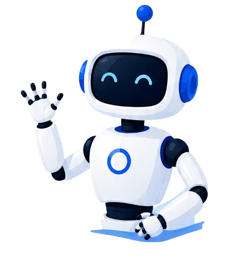
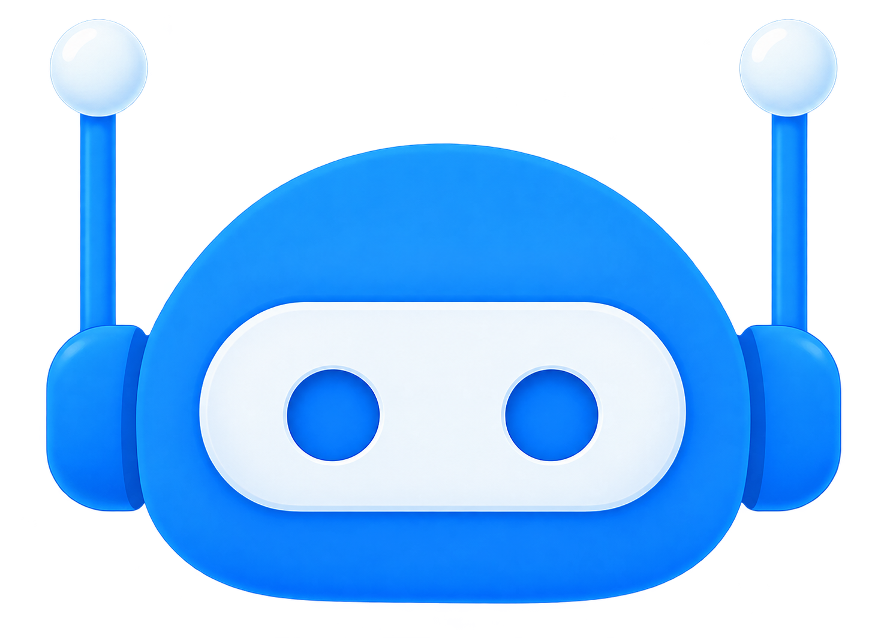
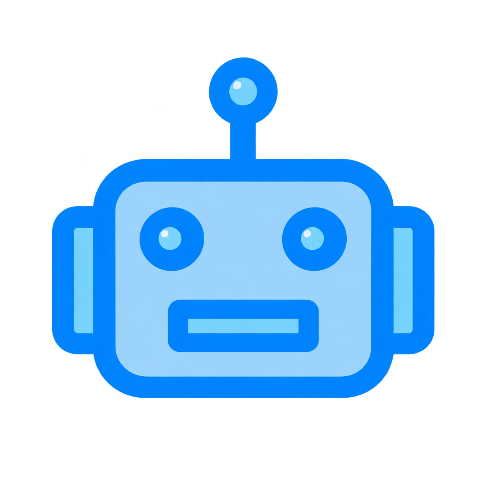

Explore o Mundo da Robótica
Descubra como os robôs funcionam, onde são usados e como a tecnologia está transformando o futuro.
A robótica está cada vez mais presente no nosso dia a dia. Ela une tecnologia, programação, mecânica e criatividade para criar máquinas capazes de ajudar pessoas, automatizar tarefas e resolver problemas.


Neste site, você vai conhecer os principais conceitos da robótica, entender os diferentes tipos de robôs, descobrir como eles podem mudar o futuro e testar seus conhecimentos em um quiz interativo.
O que é Robótica?
Entenda o conceito de robótica e veja como ela mistura ciência, tecnologia e inovação para criar sistemas inteligentes.

Tipos de Robôs
Conheça os principais tipos de robôs, como industriais, médicos, domésticos, humanoides e exploradores.
Robótica no Futuro
Veja como os robôs podem transformar áreas como saúde, educação, indústria, transporte e exploração espacial.